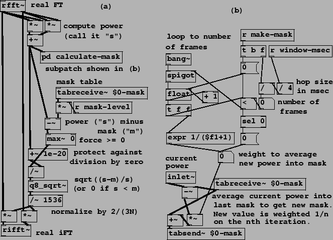
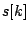
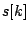
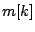
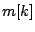
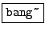
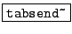
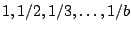
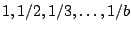

|  |
Example I04.noisegate.pd (Figure 9.16) shows an example of narrow-band companding using Fourier analysis/resynthesis. (This is a realization of the block diagram of Figure 9.8.) Part (a) of the figure shows a filter configuration similar to the previous example, except that the gain for each channel is now a function of the channel magnitude.
For each  , if we let  denote the power in channel
, if we let  denote the power in channel  , and let
 be a mask level (a level presumably somewhat higher than the noise
power for channel
, and let
 be a mask level (a level presumably somewhat higher than the noise
power for channel  ), then the gain in channel
), then the gain in channel  is given by
is given by
The mask itself is the product of the measured average noise in each channel, which is contained in the table ``$0-mask", multiplied by a value named ``mask-level". The average noise is measured in a subpatch (pd calculate-mask), whose contents are shown in part (b) of the figure. To compute the mask we are using two new new objects:
:
send a bang in advance of each block of computation. The bang appears at the
logical time of the first sample in each block (the earliest logical time whose
control computation affects that block and not the previous one), following
the scheme shown
in Figure 3.2.
:
the companion object for tabreceive~, repeatedly copies its input to
the contents of a table, affecting up to the first  samples of the table.
samples of the table.
The power averaging process is begun by sending a time duration in milliseconds
to ``make-mask". The patch computes the equivalent number of blocks  and generates a sequence of weights:
,
by which each of the
and generates a sequence of weights:
,
by which each of the  following blocks' power is averaged into whatever the
mask table held at the previous block. At the end of
following blocks' power is averaged into whatever the
mask table held at the previous block. At the end of  blocks the table holds
the equally-weighted average of all
blocks the table holds
the equally-weighted average of all  power measurements. Thereafter, the
weight for averaging new power measurements is zero, so the measured average
stops evolving.
power measurements. Thereafter, the
weight for averaging new power measurements is zero, so the measured average
stops evolving.
To use this patch for classical noise suppression requires at least a few seconds of recorded noise without the ``signal" present. This is played into the patch, and its duration sent to ``make-mask", so that the ``$0-mask" table holds the average measured noise power for each channel. Then, making the assumption that the noisy part of the signal rarely exceeds 10 times its average power (for example), ``mask-level" is set to 10, and the signal to be noise-suppressed is sent through part (a) of the patch. The noise will be almost all gone, but those channels in which the signal exceeds 20 times the noise power will only be attenuated by 3dB, and higher-power channels progressively less. (Of course, actual noise suppression might not be the most interesting application of the patch; one could try masking any signal from any other one.)